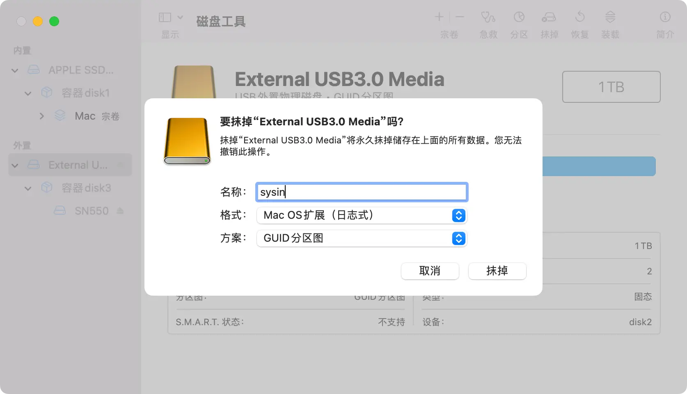
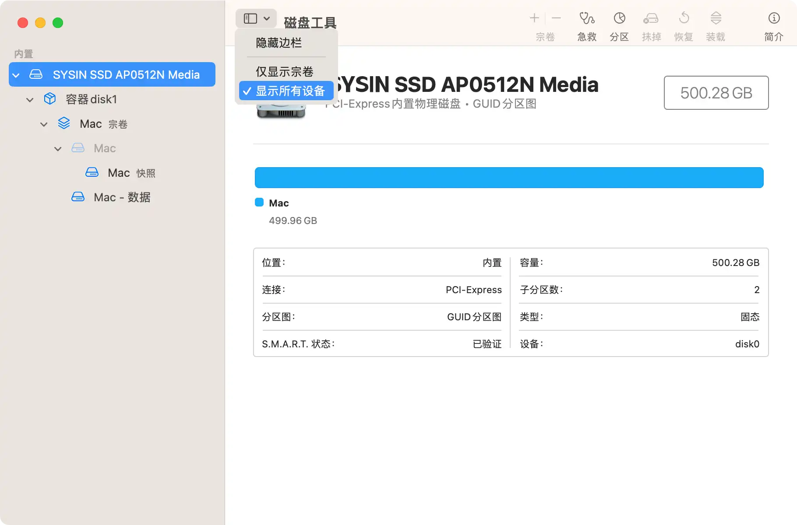
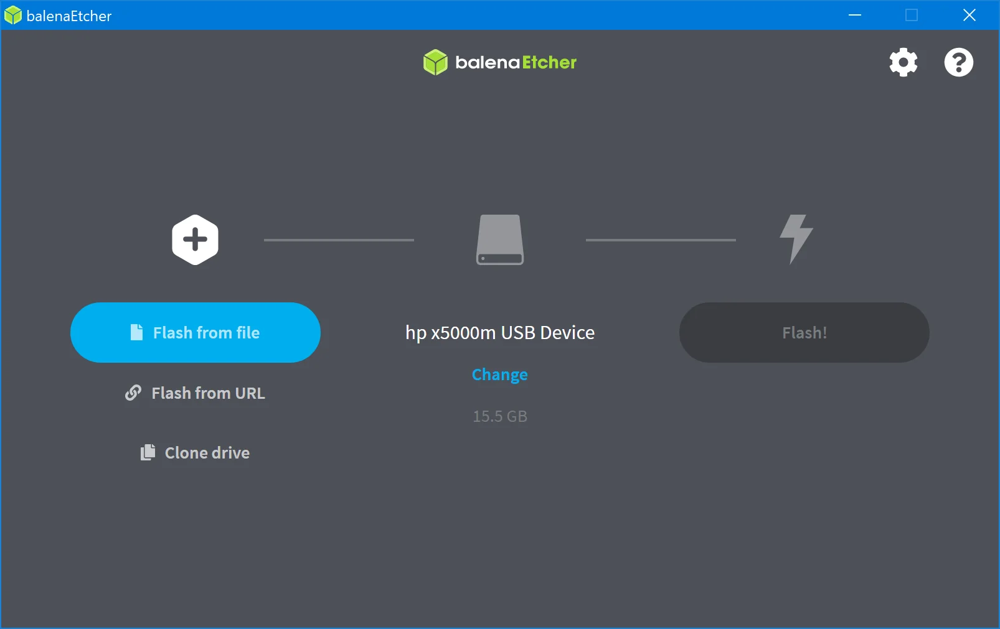
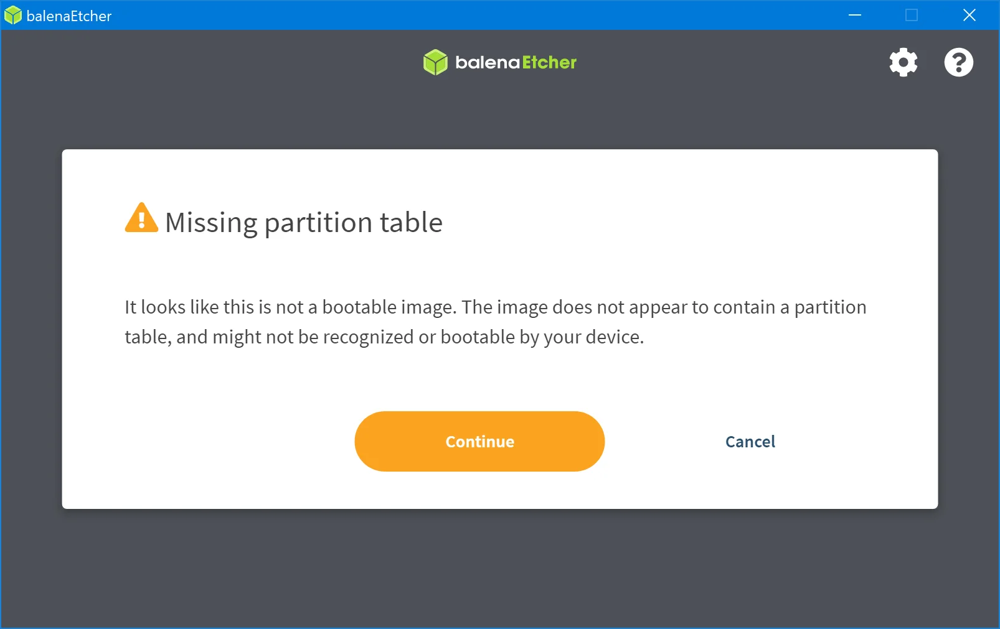
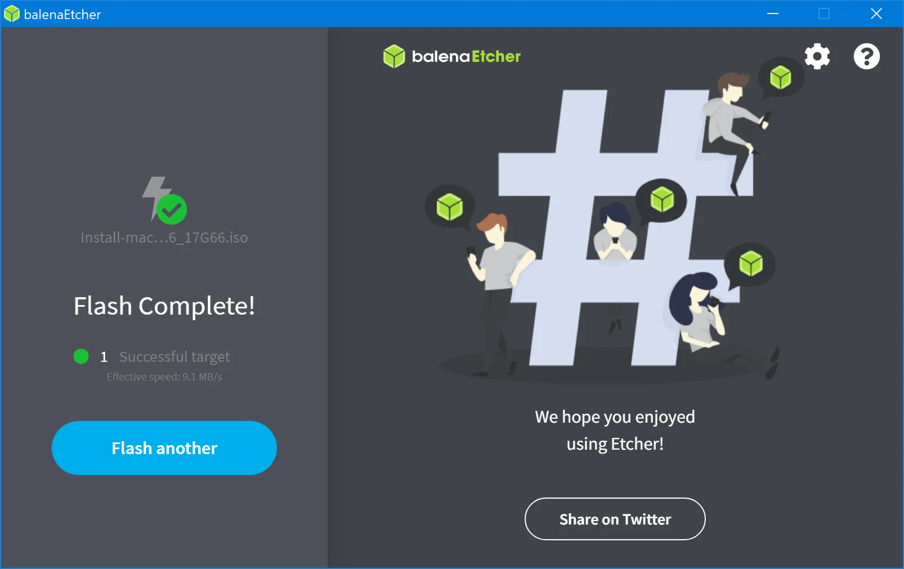

请访问原文链接：如何创建可引导的 macOS 安装介质 查看最新版。原创作品，转载请保留出处。
作者主页：sysin.org
macOS Sequoia
当前版本：

-> macOS Sequoia 15.2 (24C101) 正式版 ISO、IPSW、PKG 下载
macOS Sonoma
当前版本：

-> macOS Sonoma 14.7.2 (23H311) 正式版 ISO、IPSW、PKG 下载
macOS Ventura
当前版本：

您可以将外置驱动器或备用宗卷用作安装 Mac 操作系统的启动磁盘。
准备和条件
下载 macOS【直接下载】
要保证下载的安装包 Install macOS *.app（“安装 macOS [版本名称]”的 App）在 “应用程序” 文件夹。
ISO 格式打开后可以拖拽到 “应用程序” 文件夹，或者只需要双击挂载更便捷；
PKG 格式的软件包，打开根据提示自动安装到 “应用程序” 文件夹；
在 Mac App Store 下载的 App 会自动保存在 “应用程序” 文件夹。
DMG 的软件包，需要打开拖拽到 “应用程序” 文件夹；
准备启动介质：USB 移动存储设备
可以使用以下三种介质中的一种：
- （1）U 盘（SD 卡也可以，通常需要转换接口）；
- （2）USB 移动硬盘，比如 USB SSD 移动硬盘更佳（推荐👍）；
- （3）使用 “磁盘工具” 在内置闪存中新建一个分区（非 APFS 宗卷），适合有经验的用户，大版本更新推荐使用 USB 外置存储抹掉整个内置磁盘。
USB 存储容量要求：
- macOS 10.12 - 10.14，以及更旧的版本，介质容量 8GB 及以上；
- macOS 10.15、11 - 14，介质容量 16GB 及以上；
- macOS 15 大约需要 18GB 左右的空间，介质容量 32GB 及以上。
建议方式：使用外置 USB SSD 添加一个分区（非 APFS 宗卷），约 20GB 容量即可，不影响原有数据存储功能。
U 盘速度极慢，寿命较短，慎用！
使用 “磁盘工具” 抹掉上述介质或者分区，要求如下：
- （1）Mac OS X 扩展（日志式）；
- （2）GUID 分区图；
- （3）分区名称：sysin（这里为示例名称，可以自定义，简单点就直接按照本文操作即可）。

上述对话框无法正确呈现？请确保已经显示所有设备（如下图），针对设备级别操作。

在 “终端” 中使用 “createinstallmedia” 命令
- 连接要用于保存可引导安装器的 USB 闪存驱动器或其他宗卷。
- 打开 “应用程序” 文件夹内 “实用工具” 文件夹中的“终端”。
- 在 “终端” 中键入或粘贴以下命令之一。这些命令假设安装器位于您的 “应用程序” 文件夹中，并且 “sysin” 是您所使用的 USB 闪存驱动器或其他宗卷的名称。如果不是这个名称，请将这些命令中的 sysin 替换为您的宗卷名称。
macOS Sequoia 15：
sudo /Applications/Install\ macOS\ Sequoia.app/Contents/Resources/createinstallmedia --volume /Volumes/sysin
本站 ISO 镜像，仅需双击挂载：
sudo /Volumes/Install\ macOS\ Sequoia/Install\ macOS\ Sequoia.app/Contents/Resources/createinstallmedia --volume /Volumes/sysin
macOS Sonoma 14：
sudo /Applications/Install\ macOS\ Sonoma.app/Contents/Resources/createinstallmedia --volume /Volumes/sysin
本站 ISO 镜像，仅需双击挂载：
sudo /Volumes/Install\ macOS\ Sonoma/Install\ macOS\ Sonoma.app/Contents/Resources/createinstallmedia --volume /Volumes/sysin
macOS Ventura 13：
sudo /Applications/Install\ macOS\ Ventura.app/Contents/Resources/createinstallmedia --volume /Volumes/sysin
本站 ISO 镜像，仅需双击挂载：
sudo /Volumes/Install\ macOS\ Ventura/Install\ macOS\ Ventura.app/Contents/Resources/createinstallmedia --volume /Volumes/sysin
macOS Monterey 12：
sudo /Applications/Install\ macOS\ Monterey.app/Contents/Resources/createinstallmedia --volume /Volumes/sysin
本站 ISO 镜像，仅需双击挂载：
sudo /Volumes/Install\ macOS\ Monterey/Install\ macOS\ Monterey.app/Contents/Resources/createinstallmedia --volume /Volumes/sysin
macOS Big Sur 11：
sudo /Applications/Install\ macOS\ Big\ Sur.app/Contents/Resources/createinstallmedia --volume /Volumes/sysin
本站 ISO 镜像，仅需双击挂载：
sudo /Volumes/Install\ macOS\ Big\ Sur/Install\ macOS\ Big\ Sur.app/Contents/Resources/createinstallmedia --volume /Volumes/sysin
注意：无法在搭载 Apple 芯片的 Mac 上创建 10.x 的旧版 macOS 启动介质。
macOS Catalina 10.15：
sudo /Applications/Install\ macOS\ Catalina.app/Contents/Resources/createinstallmedia --volume /Volumes/sysin
macOS Mojave 10.14：
sudo /Applications/Install\ macOS\ Mojave.app/Contents/Resources/createinstallmedia --volume /Volumes/sysin
macOS High Sierra 10.13：
sudo /Applications/Install\ macOS\ High\ Sierra.app/Contents/Resources/createinstallmedia --volume /Volumes/sysin
如果您的 Mac 运行的是 macOS Sierra 或更低版本，请使用 --applicationpath 参数和安装器路径，具体方法与在适用于 Sierra 的命令中完成这个操作的方法类似。
macOS Sierra 10.12：
sudo /Applications/Install\ macOS\ Sierra.app/Contents/Resources/createinstallmedia --volume /Volumes/sysin --applicationpath /Applications/Install\ macOS\ Sierra.app
OS X El Capitan 10.11：
sudo /Applications/Install\ OS\ X\ El\ Capitan.app/Contents/Resources/createinstallmedia --volume /Volumes/sysin --applicationpath /Applications/Install\ OS\ X\ El\ Capitan.app
OS X Yosemite 10.10：
sudo /Applications/Install\ OS\ X\ Yosemite.app/Contents/Resources/createinstallmedia --volume /Volumes/sysin --applicationpath /Applications/Install\ OS\ X\ Yosemite.app
键入命令后：
- 按下 Return 键以输入这个命令。
- 出现提示时，请键入您的管理员密码，然后再次按下 Return 键。在您键入密码时，“终端” 不会显示任何字符。
- 出现提示时，请键入
Y以确认您要抹掉宗卷，然后按下 Return 键。在抹掉宗卷的过程中，“终端” 会显示进度。 - 宗卷被抹掉后，您可能会看到一条提醒，提示 “终端” 要访问可移除宗卷上的文件。点按 “好” 以允许继续拷贝。
- 当 “终端” 显示操作已完成时，相应宗卷将拥有与您下载的安装器相同的名称，例如 “Install macOS Ventura”。您现在可以退出“终端” 并弹出宗卷。

如果出现 ”mount of outer dmg failed“ 错误，请在终端中执行命令修复权限（Big Sur 为例）：
sudo chmod 755 /Applications/Install\ macOS\ Big\ Sur.app/Contents/Resources/createinstallmedia
使用可引导安装器
确定您使用的是不是搭载 Apple 芯片的 Mac，然后按照相应的步骤操作：
Apple 芯片
- 将可引导安装器插入已连接到互联网且与您要安装的 macOS 版本兼容的 Mac。
- 将 Mac 开机并继续按住电源按钮，直到您看到启动选项窗口，其中会显示可引导宗卷和一个标有 “选项” 字样的齿轮图标。
- 选择包含可引导安装器的宗卷，然后点按 “继续”。
- macOS 安装器打开后，请按照屏幕上的说明操作。
Intel 处理器
- 将可引导安装器插入已连接到互联网且与您要安装的 macOS 版本兼容的 Mac。
- 将 Mac 开机或重新启动后，立即按住 Option (Alt) ⌥ 键。
- 当您看到显示可引导宗卷的黑屏时，松开 Option 键。
- 选择包含可引导安装器的宗卷。然后点按向上箭头或按下 Return 键。
如果您无法从可引导安装器启动，请确保 “启动安全性实用工具” 中的 “外部启动” 设置已设为允许从外部介质启动。 - 根据提示选取您的语言。
- 从 “实用工具” 窗口中选择“安装 macOS”（或“安装 OS X”），然后点按“继续”，并按照屏幕上的说明进行操作。
补充章节：
在 Windows 下创建 macOS 引导介质
macOS 是一种 Unix 操作系统，其实这个问题跟如何在 Windows 下如何创建 Linux 引导介质同理。
Linux 写入 USB 引导介质，通常需要一个 ISO 镜像，和一个第三方的 USB Boot 创建工具。
这里推荐使用跨平台的开源免费软件 Etcher，该操作也同样适用于 Linux，在 macOS 下无需这种方式，虽然也是可用的。
条件：
- USB 存储介质（比如 U 盘，USB SSD 移动硬盘更佳）
- macOS ISO 镜像，本站下载即可：macOS 下载汇总 (系统、应用和教程)
- Etcher：跨平台的操作系统镜像 USB 引导创建工具（百度网盘存档，提取码：3s8q）
USB 存储容量要求：
- macOS 10.12 - 10.14，以及更旧的版本，介质容量 8GB 及以上；
- macOS 10.15、11 - 14，介质容量 16GB 及以上；
- macOS 15 大约需要 18GB 左右的空间，介质容量 32GB 及以上。
步骤：
-
使用 “磁盘管理” 将 USB 存储介质格式化为 exFAT 格式
-
打开 balenaEtcher，选择 Flash from file，浏览到下载的 macOS iso 文件

注意：会提示 Missing partition table，点击 Continue 即可。
 -
选择要写入的 USB 存储介质
本例中为 hp x5000m 已自动选择：

-
点击 Flash! 开始写入（需要数分钟到数十分钟不等，取决于介质本身）
写入成功的截图：

⚠️ 提示：写入成功的 USB 存储介质格式为 “Mac OS 扩展（日志式）”，Windows 等第三方系统是无法读取的，显示为 RAW 格式。
搭载 Apple 芯片的 Mac 使用 IPSW 恢复系统
本任务适用以下搭载 Apple 芯片的 Mac 电脑，详见：

文章用于推荐和分享优秀的软件产品及其相关技术，所有软件默认提供官方原版（免费版或试用版），免费分享。对于部分产品笔者加入了自己的理解和分析，方便学习和研究使用。任何内容若侵犯了您的版权，请联系作者删除。如果您喜欢这篇文章或者觉得它对您有所帮助，或者发现有不当之处，欢迎您发表评论，也欢迎您分享这个网站，或者赞赏一下作者，谢谢！
 支付宝赞赏
支付宝赞赏
 微信赞赏
微信赞赏
赞赏一下